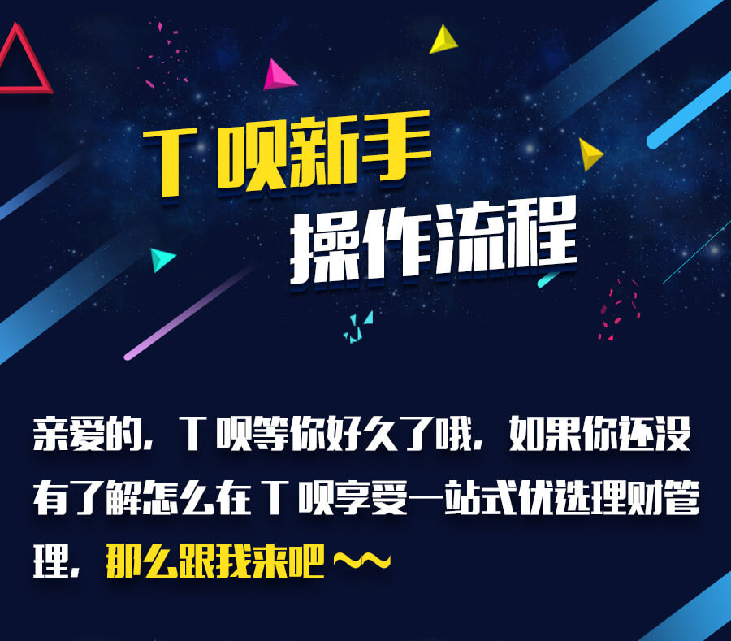
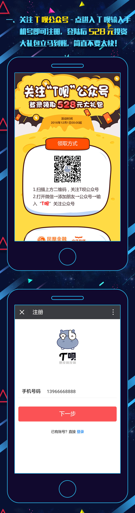
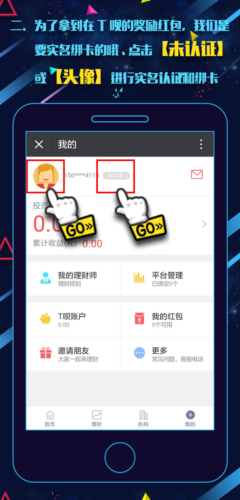
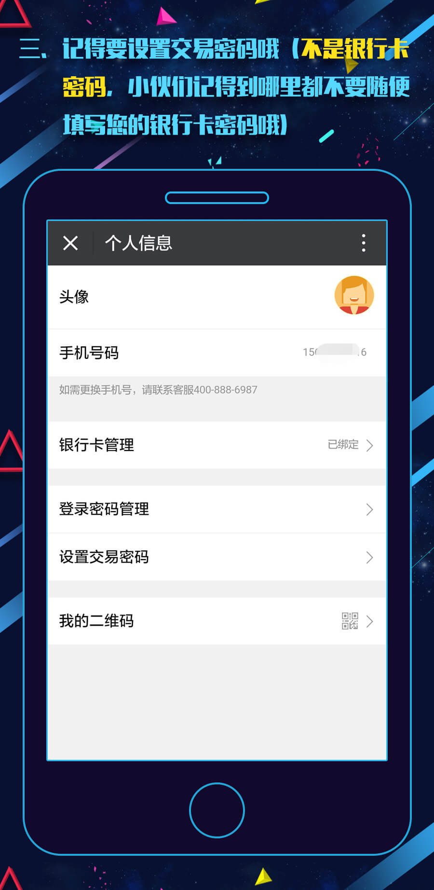
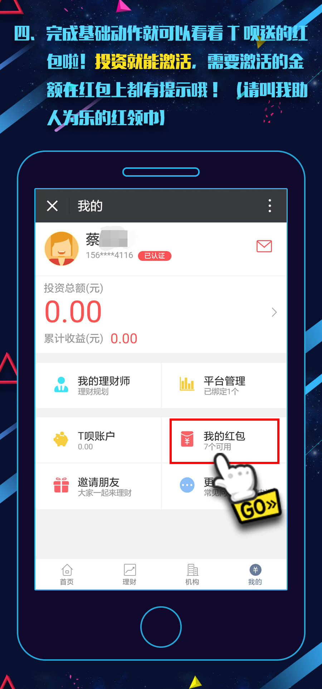
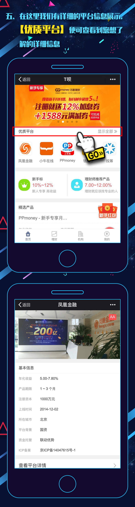
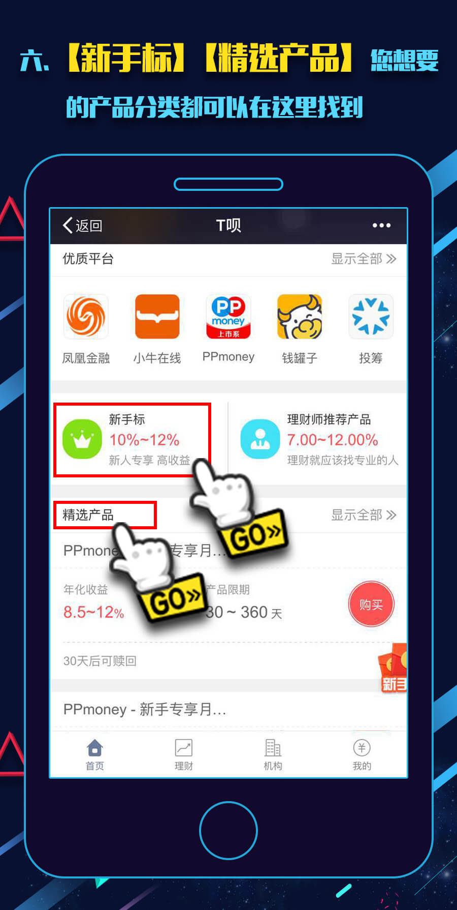
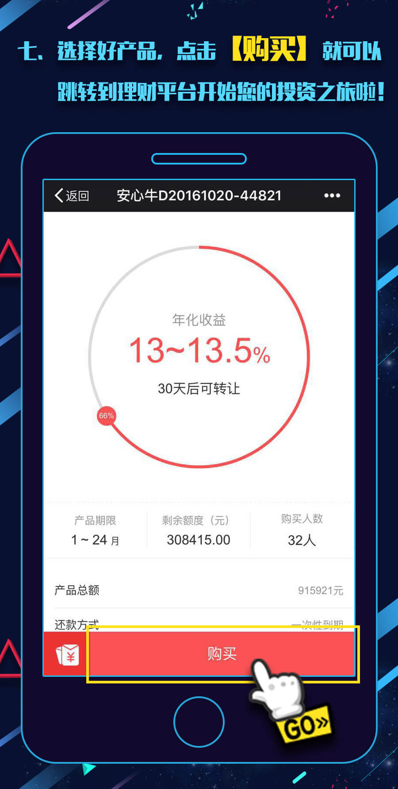
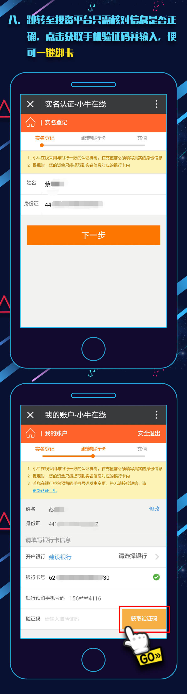
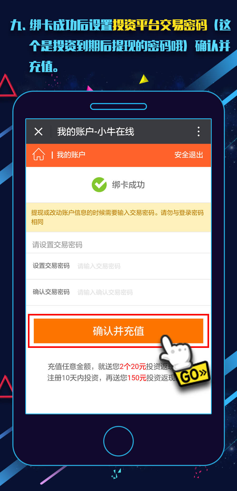
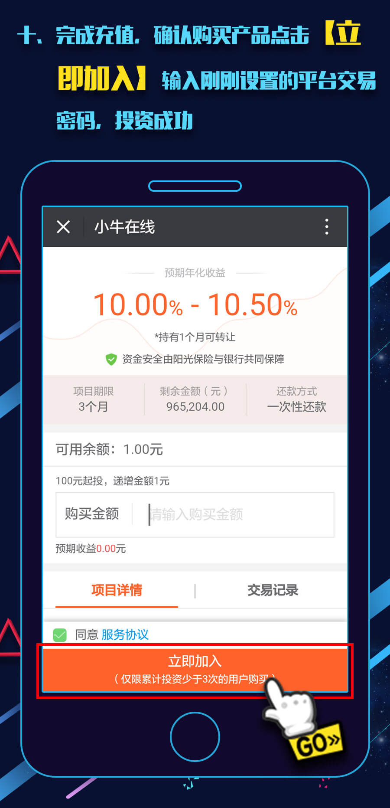
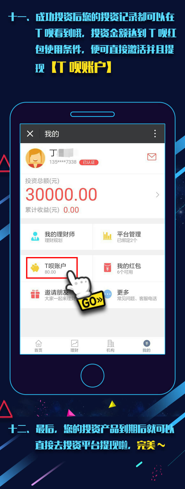
账户直通
账户直通是合作平台的一种标识，带有该标识的平台账户可以与T呗账户相互绑定。用户登录T呗后，可通过T呗直接进入该平台进行充值、投资、提现等操作，而不需要额外进行登录。
提前赎回
提前赎回是指购买的产品尚未到期（已过锁定期），但是用户想要提前拿回自己的本金和已有收益而进行的一种赎回操作。只有写明“xxx天后可赎回”的产品才能进行提前赎回，其中“xxx天”即为锁定期，未过锁定期无法进行提前赎回。
提前转让
提前转让是指购买的产品尚未到期（已过锁定期），但是投资人通过将持有的产品份额转让给其他投资人进而提前拿回自己的本金和已有收益的一种行为。只有写明“xxx天后可转让”的产品才能进行提前转让，其中“xxx天”即为锁定期，未过锁定期无法进行转让。
还款方式
还款方式是指投资人购买理财产品后借款人还给投资人本金与收益的方式。常见的还款方式及其含义如下所示：
- 一次性还本付息：借款人在规定的一个时间一次性还清所借款项所有本金和利息。
- 等额本息：所谓等额本息就是将本金总额与利息总额相加得到借款人要还的总金额。然后将该总金额按照规定的还款期限平均到每月，也就是说还款人需要每月还固定的金额。特殊之处借款人每月还款金额中，其本金所占的比重逐月递增，而利息比重逐月递减。
- 等额本金：等额本金与等额本息类似，不同的是等额本金只是将借款本金平均到每个月，利息也是需要付清上次还款日和此次还款日之间的利息。
- 按月付息到期还本：还款人需要每月偿还利息给借款人，然后在达到借款期限时返还本金。
T呗奖励
T呗奖励是一个专门用来给投资人发放活动奖励、投资返现红包账款等奖励的账户。发放的奖励暂时不能用于投资，只能提现。奖励到账后，投资人可随时申请提现。